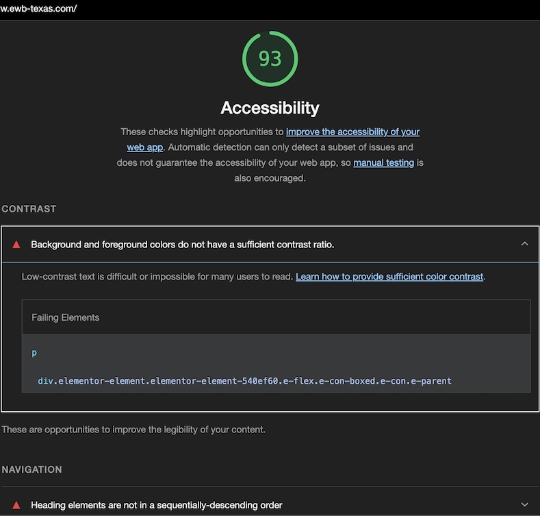

Engineers Without Borders USA (EWB-USA) is a
national non-profit, 501(c)(3) tax-exempt organization dedicated to creating a world where every community has
the capacity to sustainably meet its basic human needs.
I serve as Webmaster on the leadership team for the North Texas Professional
Chapter.
EWB-North Texas Website Redesign & Accessibility Audit
OVERVIEW
(2024 - 2025)
I am redesigning the website to enhance the user experience and simplify navigation,
ensuring visitors and sponsors can easily find information. Throughout the process, I am prioritizing
accessibility best practices to create an inclusive digital experience.
Accessibility Audits
Below are the results of audits conducted on the homepage using aXe DevTools and Lighthouse. These tools helped identify issues that were missed during the design process as well as inaccessible code within the pre-built WordPress theme.
Before the Redesign
To provide a visual reference, here is what the site design looked like before the redesign.
Press and hold on mobile, hover on desktop 😊
Accessibility Improvements
I am maintaining a running log of other accessibility issues that I am actively working to remediate.

Challenges
- Pre-built WordPress Theme: The restrictive nature of working with a pre-built WordPress theme has posed challenges for customization
- Branding Guidelines: Balancing accessibility improvements with the National Organization's branding guidelines, including specific color palettes and design requirements
Results
Here are the results of the homepage accessibility audit, showcasing improvements before and after implementing fixes: